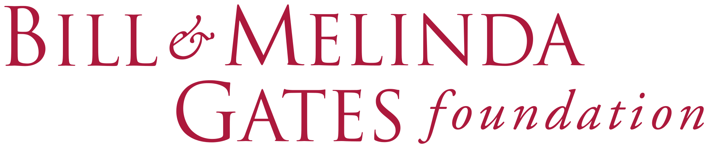

Grand Challenges
An Efficient Method to Discover the Impact of Thousands of Bold Experiments
About Grand Challenges
The Grand Challenges (GC) program was designed in 2005 to stimulate and support transformative new ideas for global health
and development – ultimately new ideas to save and improve lives around the globe. With the GC program, the
Gates Foundation sought to define and widely publicize compelling problems that would stimulate new innovators
and creative new ideas.
To accomplish this, the GC program embraced a new approach to soliciting and selecting ideas that would permit
the evaluation of a very large number of shorter applications, and in the ten years it has been active, has
received over 40,000 proposals from over 190 countries. Since then, other funding partners have embraced
a similar model of selection and grantmaking, and the impact of the over 1,300 projects funded is widely
needed.
Our Project - Challenege
Challenege needing to solve:
As described above the Grand Challenges Organization gives out grants to research projects that are trying to solve prevelant globath heath issues. However, due to a lack of information provided by grantees, it is difficult for the foundation to measure their impact. The Organization is looking for a way to be able to understand the impact their grants. The way to understand this impact is by finding articles about the projects the Organization funded to find out what came out of their research.
Our Project - Solution
Solution we created:
Our solution brings the vastness of the web into an organized, searchable portal that will allow users to find and filter news articles related specifically to projects funded by the foundation. With stories and evidence of the value of these smaller grants, the Grand Challenges program will continue to receive funding and solve important global health issues.